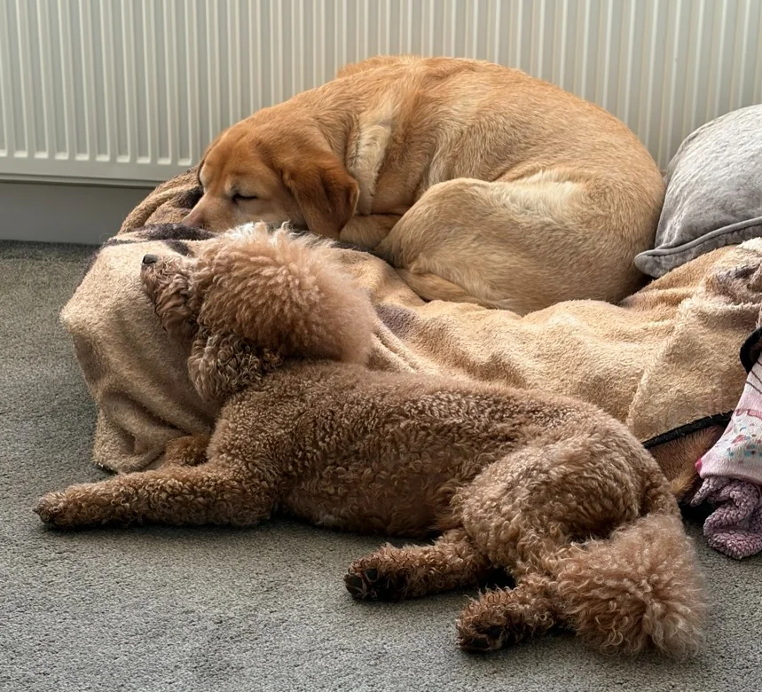
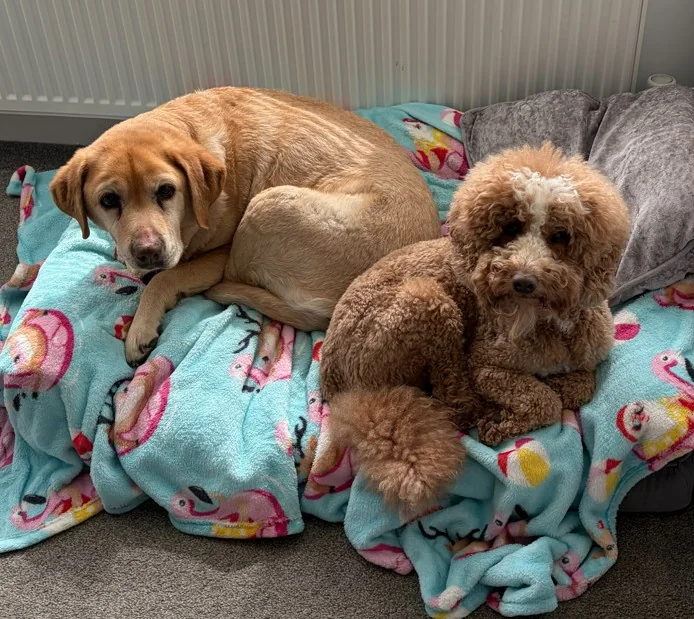

If you read our post about the night Missy was attacked, you'll know how frightening that evening was. An off-lead dog, no warning, no owner in sight — and Missy left with a wound that needed staples, antibiotics and a very late-night visit to Portchester Vets, who were absolutely extraordinary.
We wrote about it because we wanted other dog owners to be prepared in a way we weren't. But we also promised an update. And the update — honestly — is one of the best parts of the whole story.
If you missed the original post, you can read the full story of what happened that night and what to do if your dog is ever attacked.
Read: When Missy Was Attacked →“We didn't ask Maverick to look after her. He just did. From the very first night.”
The First Night
We brought Missy home from the vets late. She was sore, quiet and clearly not herself — which for anyone who knows Missy, a Labrador who has the energy and warmth of a dog half her age, was noticeable immediately.
Maverick noticed too.
He found her almost as soon as she was settled. Curled up right beside her, as close as he could get without disturbing her wound. He didn't want to play. He wasn't bouncing around the room looking for attention. He just stayed there, completely still, pressed against her.
He stayed there most of the night.

The night after — Maverick settled beside Missy and barely moved.
The Weeks That Followed
Recovery from a dog attack takes time. Missy had staples that needed to stay in, antibiotics to finish, and the kind of enforced rest that any active, sociable Labrador finds deeply undignified. She wasn't allowed long walks. She wasn't herself.
Maverick adapted completely.
The dog who normally has approximately one speed — fast — slowed down entirely. Where Missy rested, Maverick rested. If she moved to a different spot in the house, he followed. When she went into the garden at whatever pace she could manage, he went with her, matching her step for step rather than racing off ahead the way he normally would.
We've always known they were close. Living together, walking together, sharing a home for four years — of course they have a bond. But watching Maverick during those weeks showed us something we hadn't quite seen before. He wasn't just used to her company. He was genuinely looking after her.
Dogs sense things we can't always articulate. Maverick knew Missy was hurt and he responded to it in the most uncomplicated, instinctive way possible — by staying close. No fuss. No drama. Just presence.
It is one of the most quietly moving things we have ever watched.
How They Are Now
Missy has made a full recovery. The staples came out, the antibiotics finished, and she has gradually returned to exactly herself — walks, enthusiasm, the particular Labrador joy that she brings to absolutely everything.
And Maverick? Back to full speed. Disappearing behind the sofa. Investigating the garden. Causing the usual amount of affectionate chaos.
But the two of them together — there's something slightly different about it now. A warmth that was always there but feels more visible somehow. They choose to be near each other in a way that feels deliberate rather than just habitual.
The night after the attack.

Two weeks later — both of them settled and healing together.
The Thing About This Bond
Maverick is the star of the books. He has the Instagram, the TikTok, the children's book series built around his habit of disappearing somewhere completely inconvenient. He is, by any measure, the more prominent of the two.
But Missy is the steady one. The calm presence in the house. The dog who has been here longer, who set the tone, who Maverick has always looked to in his own way even if he would never admit it.
What happened during her recovery reminded us that behind all of Maverick's energy and personality and general chaos, there is a dog who genuinely loves the people and animals around him. He showed us that during the hardest few weeks Missy has had.
And that, more than anything else, is who he really is.
Where Is Maverick? — Available Now
The first book in the Maverick's Adventures series. A rhyming hide-and-seek story for ages 2–6.
Buy on Amazon →Join the Maverick's Adventures family
Free activity pack for little ones plus early access to Book 2 when it launches.
Until next time,